Class sections36
Visual Encoding
How to give data a visual form and choose what to show.
InstructorCarlos Elías Pérez
From question to representation
Data types and the task guide how we represent the data.
WhatData
What types of data we have: categories, orders and quantities. How they are organized: tables, networks or spatial data.
WhyTasks
What someone needs to do with the data: identify a value, compare items or summarize the dataset.
HowIdiom
Which marks, channels and interactions we choose for the task. For example, comparing quantities with bars.
Attributes: characteristics of data
An attribute is a characteristic of an item. In a table, each column records an attribute and each row an item.
| Object | Material | Priority | Weight (kg) |
|---|---|---|---|
| A | Wood | Low | 2 |
| B | Metal | High | 8 |
| C | Glass | Medium | 5 |
- Item
- What we observe: object B.
- Attribute
- The characteristic we record: its weight.
- Value
- The specific value of that attribute: 8 kg.
Material, priority and weight describe the same object, but their values allow different comparisons.
Attribute types: what we can compare
The type tells us which comparisons make sense. Ordered attributes can be ordinal or quantitative.
Categorical
Distinguishes categories. We can recognize matches and differences, and count how many items belong to each category.
Averaging material names makes no sense.
Ordinal
Allows values to be ordered. We know high follows medium, but not how far apart they are.
Encoding low = 1, medium = 2 and high = 3 does not create equal distances.
Quantitative
Expresses quantities. We can calculate differences or averages, depending on what the attribute measures.
An 8 kg object weighs twice as much as a 4 kg object. The unit matters.
An identifier such as “001” can be categorical. Having digits does not make it a quantity.
Order: sequences, divergences and cycles
Beyond attribute type, values may follow a sequence, diverge from a reference or repeat in a cycle.
Sequential
Follows a scale from lower to higher: weight, duration or quantity.
The direction of the scale does not mean the data always increase over time.
Diverging
Compares two directions from a meaningful reference: below or above a target.
Explain the centre. It need not be zero in the original variable.
Cyclic
At the end of a cycle, the sequence starts again: hours of the day or months of the year.
January follows December. The full date, however, keeps moving forward.
Four families of decisions
“How” defines how we show data and interact with them.
We can combine these decision families in one visualization.
Marks: what we draw
Points, lines and areas are elements we use to build a representation.
Points
A point can represent an entity, such as a branch.
Lines
A line can connect stations or show an ordered series.
Areas
An area can represent a region, such as a territory.
A mark is the graphical element that represents an entity, relationship or region. We choose it according to what we need to represent.
A bar is a mark whose length communicates a quantity. The mark and the channel have different roles.
Channels: what we can vary
Channels are properties of marks that we vary to represent data attributes.
Position
Size
Colour
Shape
Orientation
Channels: distinguish and compare
We choose channels according to the attribute type and the comparison the audience needs to make.
Identity · which is which
Hue and shape help identify categories: material, branch or type. They distinguish items without suggesting that one is greater than another.
Magnitude · how much
Position and length allow quantities to be compared. Area, volume and luminance can also convey magnitude, but with different precision.
For ordinal data, expressing order is enough. For quantitative data, reading how much the value changes also matters.
Channels: combine and reinforce
One mark can convey several attributes or reinforce one attribute through different channels.
Combine
Two attributes: weight uses horizontal position; type uses colour hue.
Reinforce
One attribute: hue and shape indicate type. This is redundant encoding: shape also distinguishes types without colour.
Choose according to the mark
The mark limits which changes we can perceive. Rotating a circle does not change its appearance; rotating a triangle does.
Each channel should convey something useful. Adding properties without a clear purpose makes reading harder.
Arrange: separate, order and align
Within a view, position can form groups and support comparisons.
What changed
The values are North 40, South 60, Central 30 and Coast 50. Sorting changes their positions, not their quantities. Separating creates regions for categories; aligning enables comparison from a common reference. The button combines this encoding decision with the technique of changing the view.
Position: when space has meaning
On a map, position corresponds to a geographic location. In a table, it depends on how we order rows and columns.
Use coordinates
Moving a mark to sort values would change its location. Another channel must express quantity.
Organize categories
Rows and columns can be reordered if their labels and meaning are preserved.
Evaluate: expressiveness and effectiveness
We evaluate marks and channels with two principles: respect the data and support the task.
Expressiveness
Does the representation respect relationships in the data?
Attribute type determines which relationships we can show: identity, order or quantity.
Effectiveness
Does it make the task easy to perform?
Perceptual aspects that help evaluate it
- Accuracy
- Compare values.
- Discriminability
- Recognize different levels.
- Separability
- Read attributes separately.
- Salience
- Guide attention.
Expressiveness: respect meaning
The representation must show relationships that exist in the data.
An order that does not exist
A difference in identity
Another common error
Connecting unordered categories with a line can suggest continuity. Sorting by a quantity is valid: the order belongs to the compared value, not to the category name.
Effectiveness: support the task
The most useful channel depends on the comparison we want to make.
Length from a common baseline
Proportional area
A guide, not a ban
Position on a common scale often helps compare quantities accurately. Area can be useful for other tasks or when position already represents geography. The channel ranking guides decisions; it does not replace the task, audience or context.
Channels: Stevens’ power law
Doubling a stimulus does not always double what we perceive.
Stimulus and sensation
S = k In
I: physical intensity of the stimulus.
S: perceived sensation.
k: adjusts the measurement scale.
n: depends on the stimulus.
- n = 1
- Proportional growth.
- n < 1
- Sensation grows more slowly.
- n > 1
- Sensation grows faster.
A basis for studying accuracy
The law relates physical intensity to perceived sensation; accuracy is evaluated when comparing values in a task. Electric shock provides a contrast with another sensory modality: it is not a visual channel.
Accuracy: compare with a reference
A shared baseline reduces the effort needed to compare lengths.
Aligned
Offset
Check the scale
Bar length is read from the baseline: cutting off zero changes that relationship. For a line series, narrowing the axis can help study variation if its limits remain visible. The rule is not identical for all charts.
Discriminability: how many levels can we recognize?
A channel has limited capacity to show clear differences.
Few categories
Too many levels
Application
If a legend requires distinguishing many similar hues or sizes, reducing categories may help. We can also use labels, separate views or reserve the most accurate channel for the main comparison.
Separability: two attributes, two readings
Some combinations allow each attribute to be read more independently.
Position and shape
We can find a category by shape and compare its position.
Width and height
We also tend to perceive total area. This can make it harder to compare each dimension separately.
Salience: guide attention
A visible difference can make one mark stand out from others.
Everything competes
An explicit focus
Highlighting is also a decision
An accent suggests importance. It must serve an explicit question or criterion. Adding a label or shape avoids relying only on colour. Rapid detection becomes less reliable when many attributes compete.
Techniques: from criteria to action
We have defined how to encode and evaluate. Next, we will manipulate a view, arrange multiple views and reduce the detail shown.
Techniques work together. For example, coordinating views links a selection across charts.
Change: explore another variable
Changing the encoding lets us examine another property of the same items.
Select: keep the context
Selection highlights items of interest while keeping the full dataset visible.
No selection
Two selected items
Why select
To follow a case, inspect its details or compare the selection with the rest.
Juxtapose: compare side by side
We place two charts side by side. Each series keeps its own axes.
Series A
Series B
Compare on the same scale
Series A rises. Series B has mostly low values and one high point. Both charts use the same scales to compare their patterns.
Superimpose: share the space
We bring both series into one chart. Each point keeps its position and series colour.
Compare in the same space
The series share variables and scales. Colour helps us follow each one; some points may be close or overlap.
Partition: divide by a variable
We split one series into two views: one for each half of the year.
Split the data and arrange the views
Each point appears in only one half and keeps its value. Partitioning divides the dataset; juxtaposition places the panels side by side.
Coordinate: follow the same item
We combine juxtaposed views with a linked selection: the same item is highlighted in both.
The same records
| Branch | Resolved |
|---|---|
| North | 40 |
| South | 60 |
| Central | 30 |
| Coast | 50 |
What makes the link possible
Views need a stable key to identify each item. Sharing a colour or being adjacent is not enough to coordinate them. Here, each button selects a branch and highlights its bar and row; it does not remove the others.
Filter: show a subset
The selection condition must remain visible and changeable.
Hiding is not deleting
The filter affects this view. Hidden branches remain in the source. When comparing views, check that they use the same filter.
Aggregate: from cases to summaries
We group rows by category and calculate each group’s mean.
Original data
| Category | Time (min) |
|---|---|
| A | 8 |
| B | 12 |
| C | 20 |
| A | 12 |
| B | 18 |
| C | 28 |
6 rows: one per observation.
Mean by category
| Category | Mean (min) |
|---|---|
| A | 10 |
| B | 15 |
| C | 24 |
3 rows: one per category.
For example, in A:
(8 + 12) ÷ 2 = 10 min.
What changes when we aggregate
We group by category and calculate a mean for each group. The result summarizes several observations in one row; individual values no longer appear in that table.
Integrate: focus and context
We expand information for some groups and keep the whole dataset as context.
Focus and context in one view
B and D are the focus: their distributions appear in more detail. A, C and E keep their positions with compact marks and remain part of the context. This reduces detail for groups we are not examining.
Design decisions
How Idiom
Encode
Components
Uses and techniques
Criteria
- Expressiveness
- Effectivenessis evaluated through
- Accuracy
- perceptual basisStevens’ power law
- Discriminability
- Separability
- Salience
- Accuracy
Manipulate
Arrange views
Reduce
Check: review what the chart claims
A readable figure also needs correct values, units and relationships.
Return to the data
Compare a value in the view with its record or calculation. Check the numerator, denominator and filter.
Read the encoding
Check axes, legend, baseline and units. Review titles, annotations, and text and mark sizes in the presentation medium: what is readable on a computer may not be readable on a projector.
Limit the conclusion
Separate description from explanation. An association does not prove causation; a sample alone does not describe the whole population.
Choose: connect decisions
The representation must let someone do something with the data.
References
Readings and materials used in this class.
- Tamara Munzner · Visualization Analysis and Design. Ch. 2: attributes and data types; 5: marks, channels and perceptual criteria; 6: rules of thumb; 7–10: spatial arrangement and colour; 11: manipulate; 12: multiple views; 13: reduce; 14: focus and context.
- Tamara Munzner · Data abstraction. Chapter 2 materials; adapted diagrams.
- Tamara Munzner · Spatial arrangement and encoding tutorial. Additional material: manipulating and arranging views; reducing and integrating focus with context.
- Wikipedia · Stevens’s power law. Stevens’ power law: the relationship between physical intensity and perceived sensation.
- Flourish · Example gallery. Source of the twelve interactive visualizations in the Reference gallery.
What we mean by idiom
In this class, we use visual idiom for Munzner’s term idiom in visualization: a specific way to represent data or interact with them. A bar chart is an encoding idiom; linked selection between charts is an interaction idiom. The term answers How in the What–Why–How framework.
How to read the examples
Branch values and other diagrams are teaching examples that isolate representation decisions, not results from an organization. Interactions change views of the same data. Diagrams without a quantitative scale illustrate an operation, not a measurement.
Twelve charts
Twelve charts: data, tasks and visual encoding.
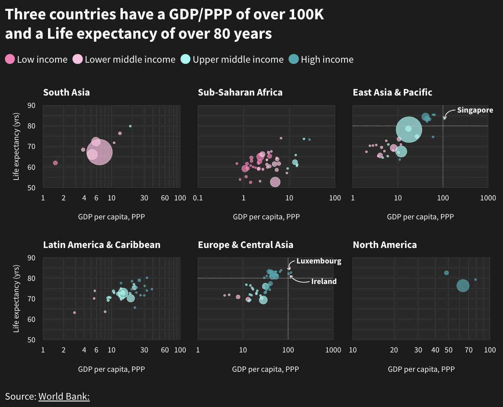
01Health and income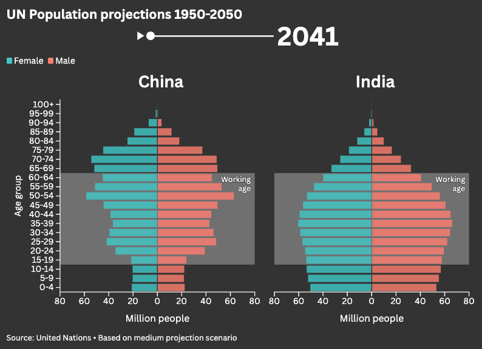
02Population: China and India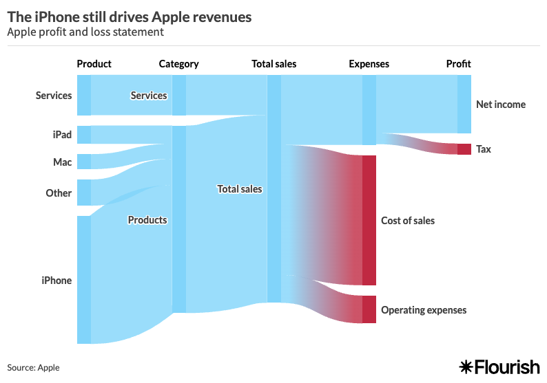
03Apple’s income and expenses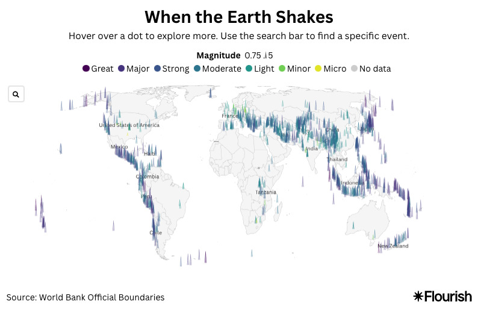
04Earthquakes around the world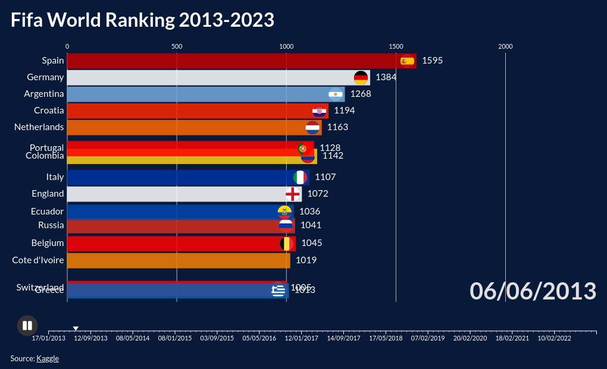
05FIFA ranking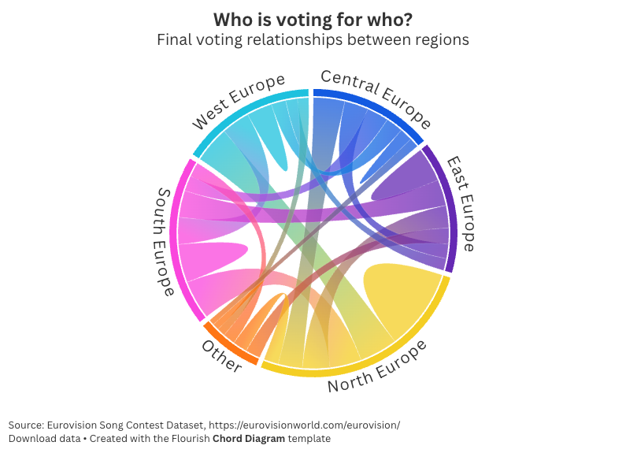
06Eurovision votes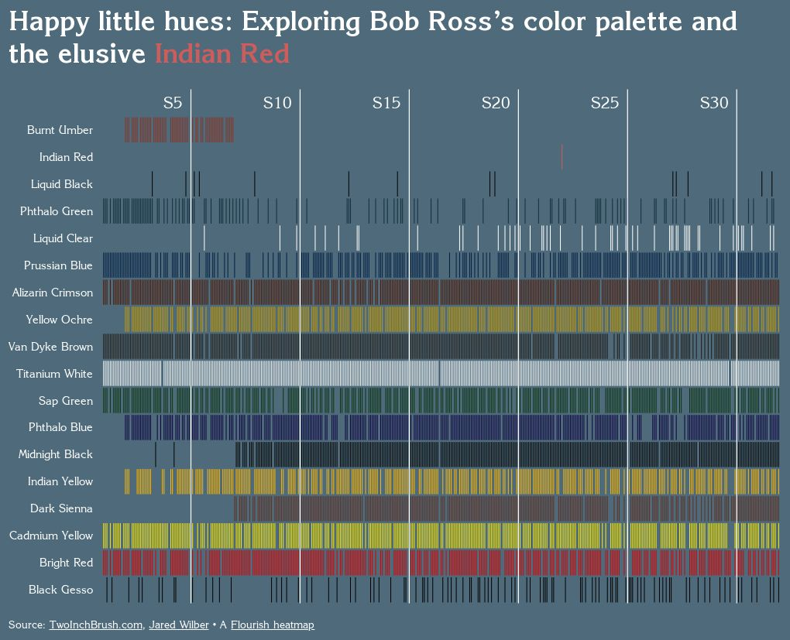
07The colours of Bob Ross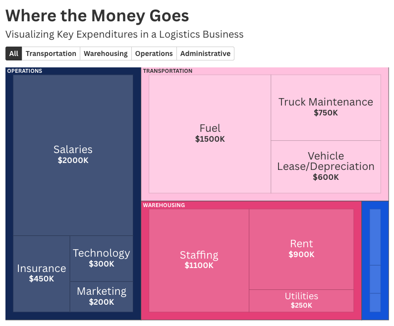
08A company’s expenses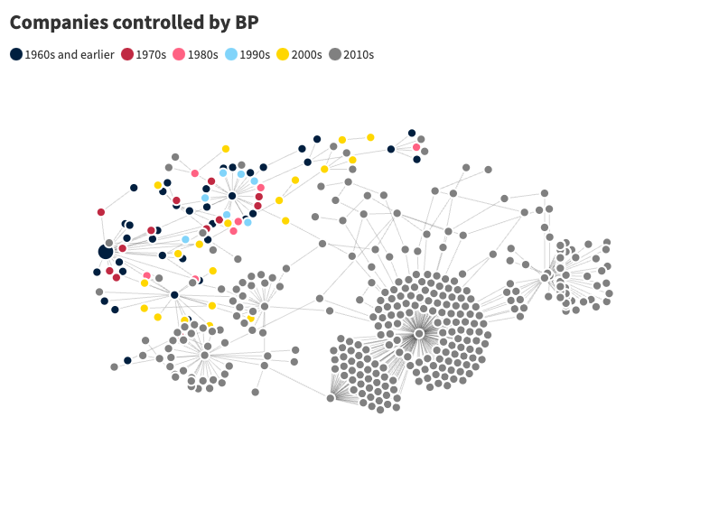
09BP companies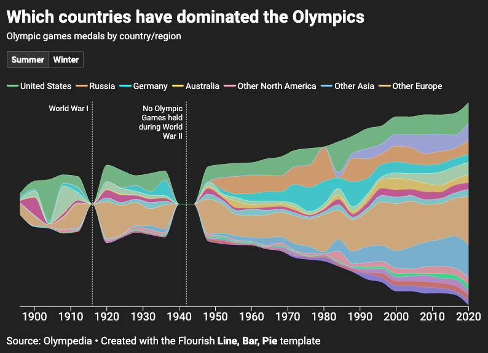
10Olympic medals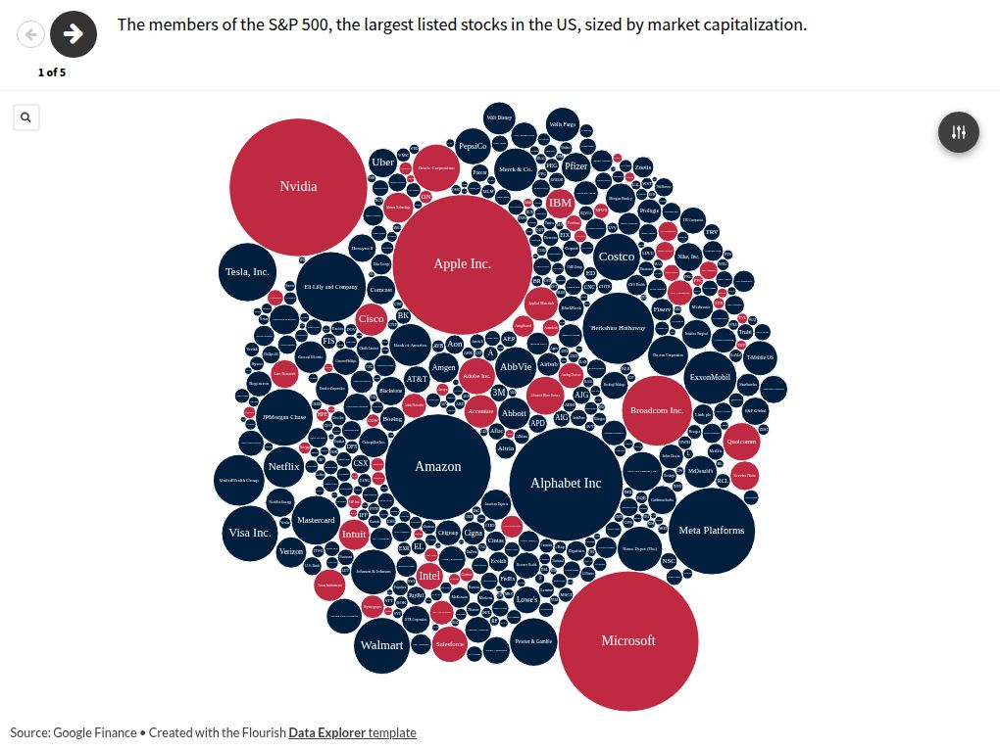
11S&P 500 companies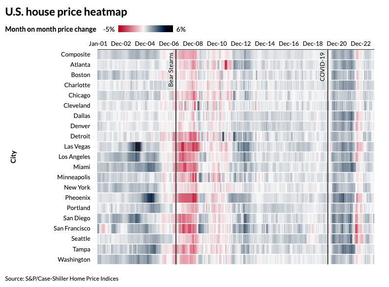
12Housing pricesSelection from the Flourish gallery · Internet connection required.